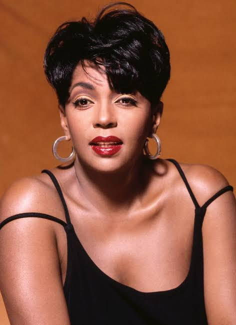
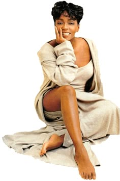
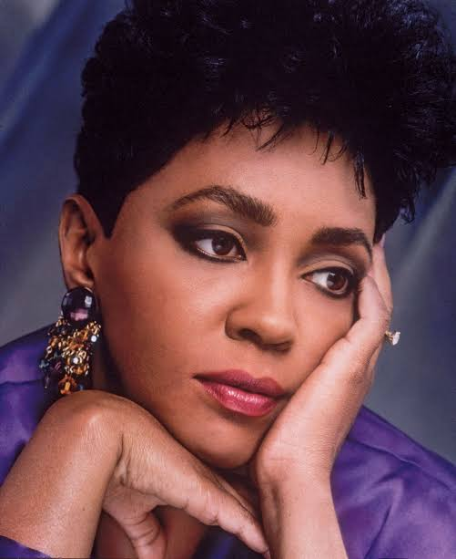
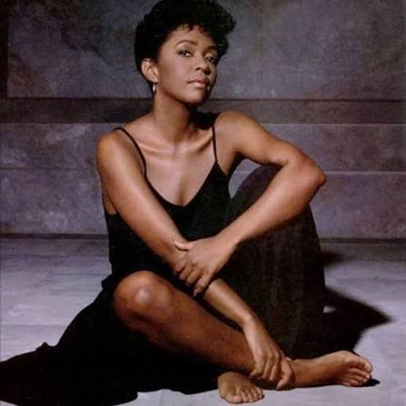
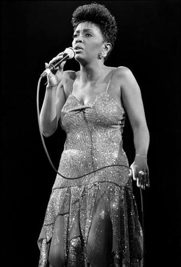
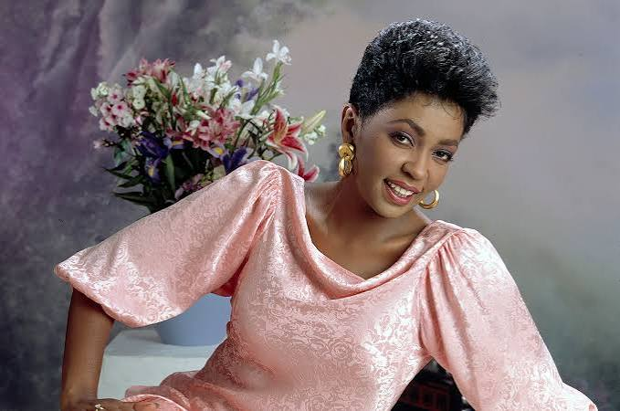
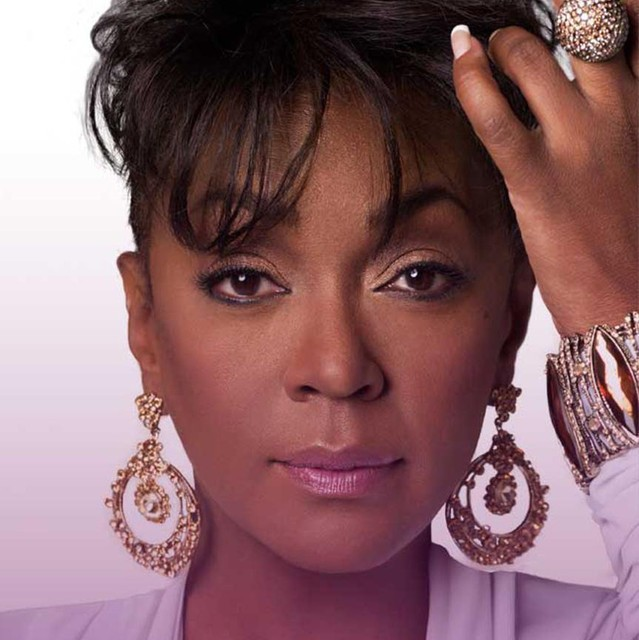

Anita Baker


Raised in Detroit, Anita Baker started singing in church choirs before joining the R&B/funk group Chapter 8 in 1975. She launched her solo career with the album The Songstress (1983). Her 1986 masterwork, Rapture, became a multi-platinum smash featuring classics like "Sweet Love" and "Caught Up in the Rapture," earning her multiple Grammy Awards. She followed it with the chart-topping Giving You the Best That I Got (1988). She later released acclaimed albums including Compositions (1990) and Rhythm of Love (1994), and My Everything (2004). Over her career, Baker won 8 Grammy Awards and famously fought for and successfully reacquired the rights and master recordings to her classic catalog.

Grammy Awards
- 1996: Best Female R&B Vocal Performance, "I Apologize"
- 1991: Best R&B Vocal Performance, Female, "Compositions"
- 1990: Best R&B Vocal Performance, Female, "Giving You the Best That I Got"
- 1989: Best R&B Vocal Performance, Female, "Giving You the Best That I Got"
- 1989: Best Rhythm & Blues Song, "Sweet Love"
- 1989: Best Rhythm & Blues Song, "Sweet Love"
- 1987: Best R&B Vocal Performance, Female, "Rapture"
- 1987: Best Rhythm & Blues Song, "Sweet Love"

American Music Awards
- 1995: Favorite Soul/R&B Female Artist (Won)
- 1990: Favorite Soul/R&B Female Artist (Won)
- 1988: Favorite Soul/R&B Female Artist (Won)
- 1988: Favorite Soul/R&B Album, "Rapture" (Won)

Additional Honors & Recognition
- Soul Train Legend Award (2010)
- BET Lifetime Achievement Award (2018)
- Hollywood Walk of Fame Star (1994)
- Honorary Doctorate of Music from Berkley College of Music (2005)

Top 10 Greatest Hits
- Sweet Love (1986), Rapture
- Giving You the Best That I Got (1988), Giving You the Best That I Got
- Caught Up in the Rapture (1986), Rapture
- No One in the World (1986), Rapture
- Same Ole Love (365 Days a Year) (1986), Rapture
- You Bring Me Joy (1986), Rapture
- Angel (1983), The Songstress
- Body and Soul (1994), Rhythm of Love
- I Apologize (1994), Rhythm of Love
- Just Because (1988), Giving You the Best That I Got

On a personal note, Anita Baker is one of my favorite artists, the reason why she is featured on this webpage is because she is the first artist whose album I purchased with my own money while I was attending high school. Her voice captured me and taught me a few things about women. 30+ years later, I still listen to the same songs as I did when I was a teenager.Anita Baker will always remain within my top 5 favorite artists.
